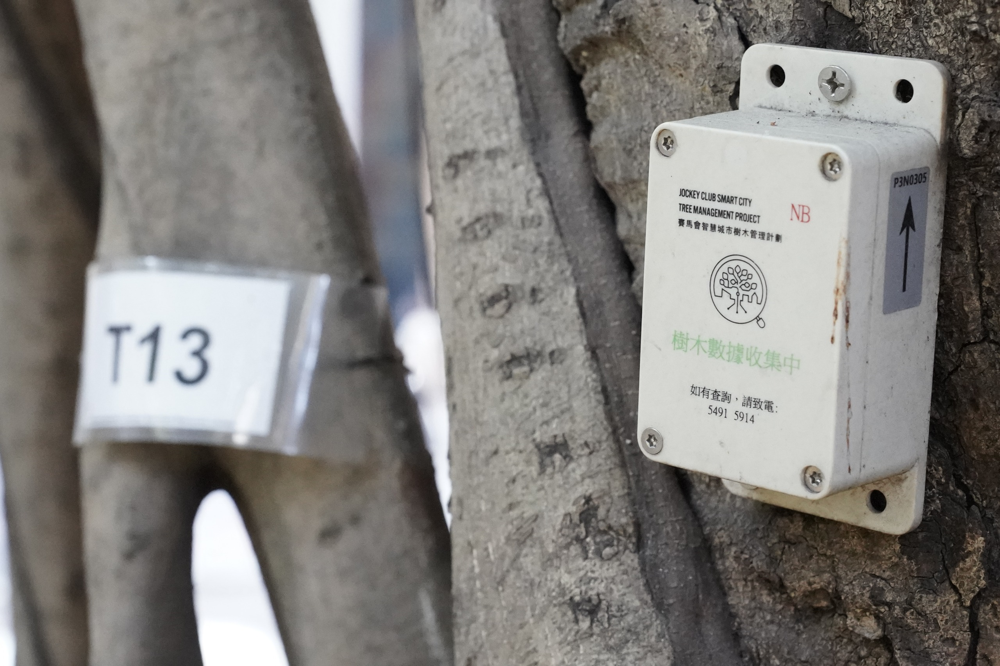

香港樹，你知多少？台風季下的城市樹危機與價值
每逢台風季，總有相似的新聞畫面在香港上演：街樹連根倒下，石牆樹「連牆帶樹」塌下來，行車線封閉、巴士改道，有時甚至有人受傷。
我們每天在樹下等車、行山、經過石牆樹投下的陰影，但對這些「鄰居」的了解，其實非常有限：香港有哪些樹？誰在負責？為什麼有些樹特別容易倒？既然有風險，我們的城市還需不需要樹？
這是一個關於「香港樹木系統」的故事：從地景分布、管理權責，到風險來源與城市價值，一層層拆給你看。
如果要用一個數字去感受「樹木風險」有幾現實，可以回到 2018 年的超強颱風「山竹」：香港天文台事後總結，風暴期間全港錄得超過 60,000 宗倒樹報告，是有紀錄以來最高的一次。 這個數字，為之後的討論定下了一個很具體的背景。
山頭是森林，市區是石屎森林

從地圖上看，香港並不是一個典型的「大都會」。全港約四成土地屬於郊野公園和特別地區，加上其他鄉郊用地，超過一半以上的土地其實是山林、農地或未發展地。密密麻麻的高樓，只擠在相對狹小的市區範圍內，形成「自然山區 + 高密度城市」並存的獨特格局。
在這個格局之下，香港的樹大致分為兩大類。
一類是城市樹：包括路旁街道樹、公園和休憩用地的樹、公屋屋邨和學校範圍內的樹，以及生長在邊坡和老石牆上的樹。政府八個主要部門合共主動管理約一百六十萬棵樹，其中康文署轄下公園、遊樂場和行人道綠化帶約佔三分之一，路政署與土木工程拓展署則負責接近另一半，主要分布在行車路旁和各類斜坡上。
這些地方你應該不會陌生：巴士站旁那幾棵木棉樹、行人路邊的小葉榄仁、屋邨平台上排排白千層，再加上夾在石牆縫隙裡的榕樹——它們構成我們日常生活中最可見的綠色。
另一類是自然林木：集中在新界丘陵、大嶼山和各區郊野公園。相思、樟樹、土沉香、各式榕樹和灌木構成了次生林，也圍繞著水塘、行山徑，為香港提供了一個遠超城市印象的生物多樣性背景。全港記錄到的維管植物超過三千種，對一個面積如此有限的城市來說，其實相當可觀。
最具香港特色的，是石牆樹——樹根從石砌擋土牆縫隙垂下，與百年老牆纏繞成一幅幅獨有的綠色景觀。早年的調查顯示，全港曾有逾千棵石牆樹，絕大多數都是榕樹，特別是細葉榕。它們既是城市記憶的一部分，也是風險管理最棘手的一群樹。
誰管那塊地，就誰管那棵樹

香港樹木管理的一個核心現實是：「誰管那塊地，就誰管那棵樹」。
路邊行車道旁的樹，多由路政署或土木工程拓展署負責；行人道、社區公園、小型休憩處，則通常是康文署的地頭；公屋範圍的樹屬房屋署；郊野公園和自然保育區的樹由漁農自然護理署照看；政府建築物四周的樹則是建築署或政府物業署的責任。
再加上水務署、渠務署、地政總署各自管自己工程或官地範圍內的樹，整個系統變成一張拼圖。至於私人物業內的樹，則由發展商、業主立案法團或物管公司負責，土地契約有時會加上「保留樹木」條款，要求不得隨意砍樹。
為了統籌這個高度分散的系統，政府在二〇一〇年代成立了樹木管理辦公室，隸屬發展局轄下的綠化、園境及樹木管理組，負責訂政策、寫指引、建立樹木登記冊和分析倒樹事故。然而，這個辦公室並不直接「養樹」，真正的日常檢查、修剪和處置，仍落在各個執行部門身上。
因此，當市民投訴「樓下那棵樹好危險」時，最常見的情況是：熱線 1823 把個案在不同部門之間轉來轉去，只因為那條路邊行人道、旁邊的斜坡和石牆背後的土地，分屬幾個不同部門和業權。責任愈分散，追問「誰要負責？」就愈困難。
其實這種制度上的複雜，市民感受得很直接：
真正危險的，不是品種，而是環境與管理

在香港的城市環境中，有幾種情況尤其值得留意。
第一種，是被迫做「淺根樹」的街樹。在狹窄樹坑、全鋪石屎的路面、邊坡薄土層和石牆縫隙中，樹根很難往下扎深，只能在表層泥土橫向蔓延。當颱風吹襲，風力一旦超過根系能承受的範圍，整棵樹就容易「連根翻倒」。木棉、榕樹類、白千層等高大樹種，如果被種在這種極不理想的環境中，風險自然比在寬闊草地或林地中來得大得多。
第二種，是被「錯誤修剪」搞到重心失衡的樹。為遷就電纜、路牌、招牌，或只為「看起來整齊」，有些樹被「削頂」、大幅度偏向一邊修剪，只剩單側樹冠，或整棵變成不自然的「蘑菇形」。這樣的樹在颱風吹襲時，風壓集中在一邊，折斷和傾斜的機會顯著增加。專業指引一再強調要避免粗暴重剪，但在實務上，節省人手和時間的「快刀修剪」仍屢見不鮮。
第三種，是內部腐朽的老樹。樹幹底部的裂縫、深樹洞、白蟻泥路、長在樹幹上的菇類和木層菌，往往是內部結構受損的警號。這些樹外表仍然枝葉繁茂，但裡面可能已經空心或承托力大降。近年政府開始使用聲波斷層儀、阻力鑽等工具檢測樹幹內部，不靠肉眼「估」，但受資源和人手所限，不可能對每棵街樹都做高成本檢查。
第四種，是石牆樹。石牆樹迷人之處，恰恰也是風險所在：樹根與百年石砌牆體糾纏在一起，牆後的土壤、排水、根系和石塊之間形成一個「命運共同體」。一旦背後土壤流失、牆體老化或基礎受損，倒塌往往不是「樹斷」，而是「牆樹齊倒」。幾宗石牆樹事故之後，政府雖然訂立專門指引，對個別高風險石牆樹減冠、加支撐或移除，但如何在「文化景觀」與「安全」之間取捨，仍是公眾充滿感情和爭議的議題。
如果拉闊時間來看，樹倒塌並非罕見的單一事件。在超強颱風「山竹」襲港的那一年，全港錄得的倒樹報告高達數以萬計；而在風勢較平靜的年份，平日加上風暴日子，每年也有數百宗倒樹或枝折個案，涉及交通阻塞、私家車被壓毀以及不同程度的人身傷害。這些數字提醒我們：樹木風險不是「聽說」，而是實實在在存在於日常生活之中。
有風險，為什麼還要種樹？

即使如此，絕大多數城市規劃專家和環保團體仍然會說：我們不能因噎廢食。問題不在於「有沒有樹」，而是「在什麼地方、用什麼方式種樹」。
從環境角度看，城市樹是重要的基礎設施。夏天日照猛烈時，有樹蔭的街道可以顯著降低體感溫度，讓長者、兒童和戶外工作者不至於在烤熱的石屎路上暴晒。樹冠能截留部分雨水，減緩水流衝擊；樹根穩定斜坡土壤，有助降低山泥傾瀉風險。樹葉又能吸附懸浮粒子、吸收部分二氧化碳和污染氣體，在高密度市區中，樹木是為數不多可以「長期駐守現場」的綠色工具。
從社會與心理健康角度看，樹木帶來的是難以量化但非常真實的「心情紅利」。大量研究指出，住在有樹蔭街道、靠近公園和自然綠地的社區，居民壓力水平較低，抑鬱與焦慮症狀較少，更願意步行、出門和接觸鄰里。對一個節奏急速、樓宇壓迫感強烈的城市來說，一小片樹蔭，就足以改變人對一條街的感受——由「只想快點離開」變成「可以慢慢走」。
在中環返工幾年的 Kit，就用自己每日放工的路，講咗一個好直觀的比較：
從經濟角度看，樹木也是資產。世界各地不少城市在重建市中心時，都把「有樹蔭的可步行街道」視為核心賣點。行人停留時間長了，人流願意慢下來，街舖和餐廳才有生意。優質街道綠化往往和較高的物業價值、較具吸引力的商業環境聯繫在一起。
從「砍不砍」到「怎樣共存」

香港面對的難題，不是簡單的「樹太多」，而往往是：在錯的地方，用錯的方法種了樹。
從狹窄的樹坑、被石屎封死的樹根、為遷就工程而犧牲樹的健康、為求省時而粗暴修剪──這些選擇，把原本可以長壽穩定的樹，變成每逢台風必上新聞的「風險個案」。
真正要追求的，不是把所有大樹砍光，而是重新設計我們與樹的關係：在規劃階段預留足夠的根部生長空間；在選擇樹種時避免單一品種壟斷；在日常管理上投資足夠的專業人手和檢測工具；在出現風險個案時公開透明地解釋評估和取捨理由。
當市民懂得識別基本風險徵兆、懂得區分「為安全而必要移除」與「為工程方便而濫砍」，當部門之間可以真正協調而非互相「踢波」，城市才能在安全與綠蔭之間找到一個更成熟的平衡點。
畢竟，在這個山多樓多、風也多的城市裡，樹從來不是單純的背景。有沒有樹、怎樣種樹，說的其實是我們想住在一個怎樣的香港。